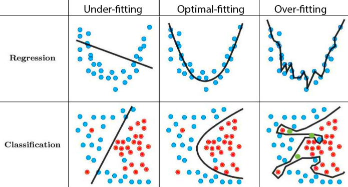
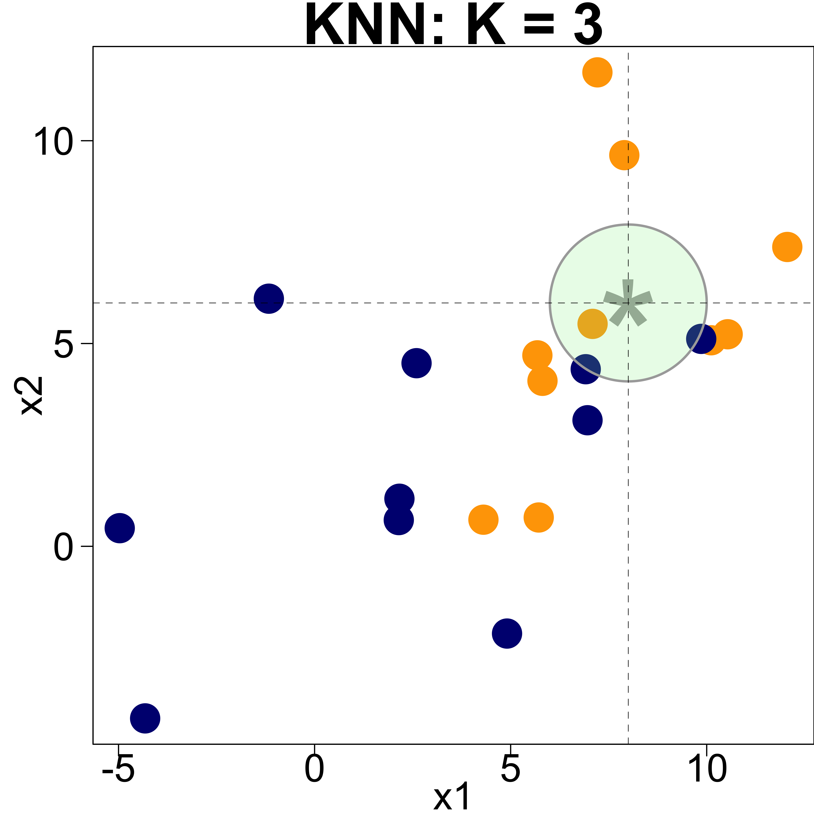
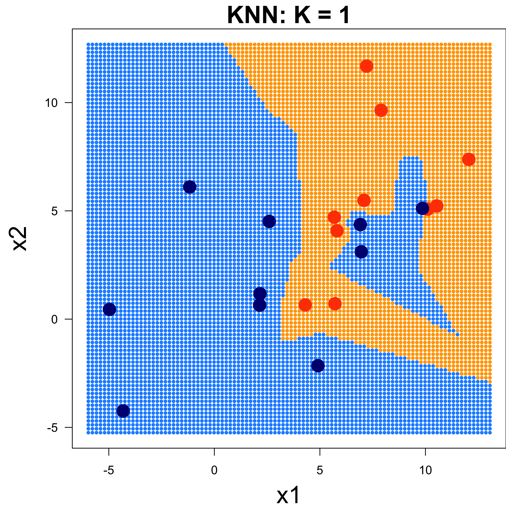
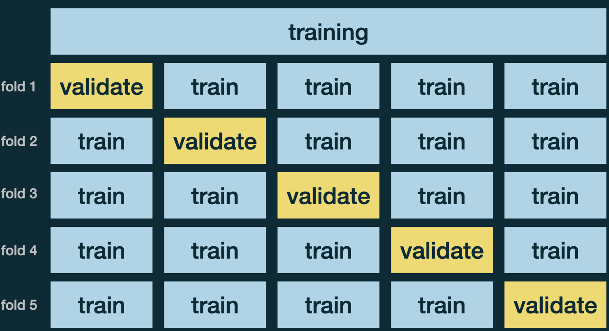
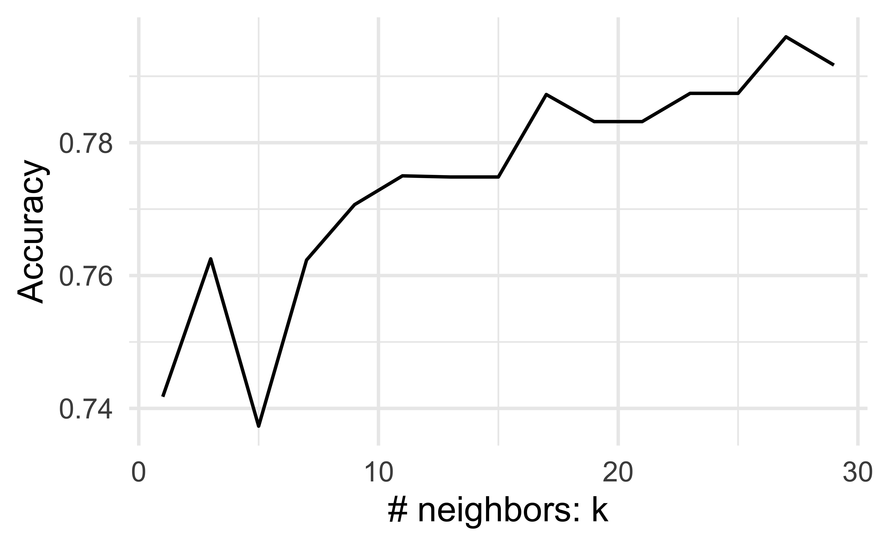

Data Splitting and K-Nearest Neighbors
MATH/COSC 3570 Introduction to Data Science
Training and Test Data
Prediction
- Goal: Build a good regression function or classifier in terms of prediction accuracy.
. . .
- The mechanics of prediction is easy:
- Plug in values of predictors to the model equation.
- Calculate the predicted value of the response \(\hat{y}\)
. . .
- Getting it right is hard! No guarantee that
- the model estimates are close to the truth
- your model performs as well with new data (test data) as it did with your sample data (training data)
Spending Our Data
- Several steps to create a useful model:
- Parameter estimation
- Model selection
- Performance assessment, etc.
. . .
- Doing all of this using the entire data may lead to overfitting:
The model performs well on the training data, but awfully predicts the response on the new data we are interested.
Overfitting
The model performs well on the training data, but awfully predicts the response on the new data we are interested.
- Low error rate on observed data, but high prediction error rate on future unobserved data!
https://i.pinimg.com/originals/72/e2/22/72e222c1542539754df1d914cb671bd7.png - Look at this illustration, and let’s focus on the overfitting and classification case. - the blue and red points are our training data representing two categories, and the green points are the new data to be classified. - the black curve is the classification boundary that separates the two categories. - Based on the boundary, you can see that the classification performance on the training data set is perfect, because all blue points and red points are perfectly separated. - However, such classification rule generated by the training data may not be good for the new data. - With this boundary, … - OK so, if we wanna make sure that our model is good at predicting things, we probably want to avoid overfitting. - But how?
Splitting Data
Often, we don’t have another unused data to assess the performance of our model.
Solution: Pretend we have new data by splitting our data into training set and test set (validation set)!
. . .
-
Training set:
- Sandbox for model building
- Spend most of our time using the training set to develop the model
- Majority of the original sample data (~80%)
. . .
-
Test set:
- Held in reserve to determine efficacy of one or two chosen models
- Critical to look at it once only, otherwise it becomes part of the modeling process
- Remainder of the data (~20%)
- Allocate specific subsets of data for different tasks, as opposed to allocating the largest possible amount to the model parameter estimation only (what we’ve done so far).
- Well we do this by splitting our data. So we split our data into to sets, training set and testing set, or sometimes called validation set.
- You can think about your training set as your sandbox for model building. You can do whatever you want, like data wrangling, data transformation, data tidying, and data visualization, all of which help you build an appropriate model.
- So you Spend most of your time using the training set to develop the model
- And this is the Majority of the original sample data, which is usually about 75% - 80% of your data. So you basically take a random sample from the data that is about 80% of it.
- And you don’t touch the remaining 20% of the data until you are ready to test your model performance.
- So the test set is held in reserve to determine efficacy of one or two chosen models
- Critical to look at it once, otherwise it becomes part of the modeling process
- and that is the Remainder of the data, usually 20% - 25%
- So ideally, we hope to use our entire data as training data to train our model, right? And to test the model performance, we just collect another data set as test data to be used for testing performance. But in reality, it is not the usual case. In reality, we only have one single data set, and it is hard to collect another sample data as test data.
- So under this situation, this type of splitting data becomes a must if we want to have both training and test data.
initial_split() in 
Code
bodydata <- read_csv("./data/body.csv")
body <- bodydata |>
select(GENDER, HEIGHT, WAIST, BMI) |>
mutate(GENDER = as.factor(GENDER))set.seed(2026)
df_split <-
rsample::initial_split(
data = body,
prop = 0.8)
df_split<Training/Testing/Total>
<240/60/300>names(df_split)
df_split$in_id |> head()
body Data
df_trn# A tibble: 240 × 4
GENDER HEIGHT WAIST BMI
<fct> <dbl> <dbl> <dbl>
1 1 174. 111. 30.1
2 0 175. 77.9 21.5
3 0 162. 86.2 27
4 0 160. 88.7 26.1
5 0 155. 88.6 27.5
6 0 163. 95.4 34.6
# ℹ 234 more rowsdf_tst# A tibble: 60 × 4
GENDER HEIGHT WAIST BMI
<fct> <dbl> <dbl> <dbl>
1 1 180. 112 36.5
2 1 166. 95 25.8
3 1 169. 103. 27.4
4 0 160 94.8 27.3
5 1 155 94.5 24.8
6 0 167. 110. 30.8
# ℹ 54 more rowsWhat Makes a Good Classifier: Test Accuracy Rate
- The test accuracy rate associated with the test data \(\{x_j, y_j\}_{j=1}^J\):
\[ \frac{\text{the number of correct predictions, i.e., } y_j = \hat{y}_j}{J},\]
where \(\hat{y}_j\) is the predicted label resulting from applying the classifier to the test response \(y_j\) with predictor \(x_j\).
What is the value of \(J\) in our example?
. . .
- The best estimated classifier \(\hat{C}(x)\) trained from the training data for \(C(x)\) can be defined as the one producing the highest test accuracy rate or lowest test error rate.
K-Nearest Neighbors (KNN) Classifier
KNN classification uses majority voting:
Look for the most popular class label among its neighbors.

When predicting at \(x = (x_1, x_2) = (8, 6)\),
\[\begin{align} \hat{\pi}_{3Blue}(x = (8, 6)) &= \hat{P}(Y = \text{Blue} \mid x = (8, 6))\\ &= \frac{2}{3} \end{align}\]
\[\begin{align} \hat{\pi}_{3Orange}(x = (8, 6)) &= \hat{P}(Y = \text{Orange} \mid x = (8, 6))\\ &= \frac{1}{3} \end{align}\]
- Here is a graphical example. Suppose K = 3 and we have two predictors, \(x_1\) and \(x_2\). We want to do classification of \(Y\) when \(x_1\) is 8 and \(x_2\) is 6.
- Here how do we define neighbors, we use Euclidean distance to decide who are the point (8, 6)’s neighbors.
- Showing the idea in the figure, we just use the point (8, 6) as the center of a circle, draw a circle with a larger and larger radius until the circle captures 3 other data points that will be treated as neighbors.
- Here you can see the green circle captures the points, two are blue and one is orange.
- So when we do classification at (8, 6), we just compute the proportion of blue neighbors and the proportion of the orange neighbors, and assign the category with the highest proportion or probability to the response variable at the value of predictors (8, 6).
K-Nearest Neighbors
To predict the category of \(y\) at \(X = x\), with \(y = 0, 1\), 0 being Orange; 1 being Blue
Logistic regression: \[\hat{\pi}(x) = \hat{P}(Y = 1 \mid X = x) = \frac{1}{1+e^{-\hat{\beta_0}-\hat{\beta_1}x}}\]
KNN: \[\hat{\pi}_{K}(x) = \hat{P}(Y = 1 \mid X = x) = \frac{1}{K} \sum_{i \in \mathcal{N}_K(x)}I(y_i = 1),\] where \(\mathcal{N}_K(x)\) is the collection of indexes for which the training points \(x_i\)s are the \(K\) neighbors of \(x\).
- Let’s see what K-Nearest Neighbors method or KNN is.
- For the binary logistic regression, \(p(x) = \hat{P}(Y = 1 \mid X = x) = \frac{e^{\hat{\beta_0}+\hat{\beta_1}x_1 + \dots + \hat{\beta_p}x_p}}{1+e^{\hat{\beta_0}+\hat{\beta_1}x_1 + \dots + \hat{\beta_p}x_p}}\). Model parameters include \(\beta_0, \dots, \beta_p\). So linear regression and logistic regression are both parametric approaches. These models have some parameters to be estimated.
- KNN first identifies the \(K\) points that is closest to \(x\), or the K nearest neighbors of \(x\), then estimates the probability \(p_{Km}(x)\) as \(p_{Km}(x) = \hat{P}(Y = m \mid X = x) = \frac{1}{K}\sum_{i \in \mathcal{N}_x}I(y_i = m),\) where \(\mathcal{N}_x\) is the collection of indexes that \(x_i\)s are the \(K\) neighbors of \(x\).
- So the idea is that we first decide how many neighbors of \(x\) or K to be used, and then compute the proportion of those neighbors whose y label is category \(m\)
- KNN applies the Bayes rule and classifies the test response to the class with the largest probability. That is, \(\hat{C}_K(x) = \underset{m}{\mathrm{argmax}} \ \ p_{Km}(x)\)
- In the binary case this becomes \[\hat{C}_K(x) = \begin{cases} 0 & p_{Km}(x) < 0.5\\ 1 & p_{Km}(x) > 0.5 \end{cases}.\] and if the probability for class \(0\) and \(1\) are equal, simply assign at random.
- We typically avoid this equal probability thing happened by using odd number of K.
KNN Decision Boundary
Blue grid indicates the region in which a test response is assigned to the blue class.
We don’t know the true boundary (the true classification rule)!.

- OK. Now for every possible value of \(x_1\) and \(x_2\), we can classify its corresponding response, right?
- So we can actually create a dense grid of \(x_1\) and \(x_2\), and label each point on the grid.
- And so we can have a whole picture of how the classification result looks like.
- Blue (Orange) grid indicates the region in which a test observation will be assigned to the blue (orange) class.
- The curves that separates different classes are called decision boundaries.
- Again, in reality, we don’t know the true boundary, the Bayesian decision boundary.
KNN Training 
-
Step 1: Create recipe:
recipes::recipe()
Standardize predictors before doing KNN!
knn_recipe <- recipes::recipe(GENDER ~ HEIGHT, data = df_trn) |>
step_normalize(all_numeric_predictors())── Recipe ────────────────────────────────────────────────────────────────
── Inputs
Number of variables by role
outcome: 1
predictor: 1
── Operations
• Centering and scaling for: all_numeric_predictors()A recipe is a description of the steps to be applied to a data set in order to prepare it for data analysis. feature engineering steps to get your data ready for modeling
which is designed to help you preprocess your data before training your model
KNN Training 
-
Step 2: Specify Model:
parsnip::nearest_neighbor()
(knn_mdl <- parsnip::nearest_neighbor(mode = "classification", neighbors = 3))K-Nearest Neighbor Model Specification (classification)
Main Arguments:
neighbors = 3
Computational engine: kknn KNN Training 
Step 3: Fitting by creating workflow:
workflows::workflow()Workflow = recipe + model
knn_out <-
workflows::workflow() |>
add_recipe(knn_recipe) |>
add_model(knn_mdl) |>
fit(data = df_trn)══ Workflow [trained] ══════════════════════════════════════════════════════════
Preprocessor: Recipe
Model: nearest_neighbor()
── Preprocessor ────────────────────────────────────────────────────────────────
1 Recipe Step
• step_normalize()
── Model ───────────────────────────────────────────────────────────────────────
Call:
kknn::train.kknn(formula = ..y ~ ., data = data, ks = min_rows(3, data, 5))
Type of response variable: nominal
Minimal misclassification: 0.254
Best kernel: optimal
Best k: 3A workflow is a container object that aggregates information required to fit and predict from a model.
Prediction on Test Data
mean(knn_pred != df_tst$GENDER)
Which K Should We Use?
\(K\)-nearest neighbors has no model parameters, but a tuning parameter \(K\).
This is a parameter which determines how the model is trained, not a parameter that is learned through training.


\(v\)-fold Cross Validation
Use \(v\)-fold Cross Validation (CV) to choose tuning parameters. (MATH 4750 Computational Statistics)
Usually use \(v = 5\) or \(10\).
- IDEA:
- Prepare \(v\) CV data sets
- Create a sequence of values of \(K\)
- For each value of \(K\), run CV, and obtain an accuracy rate
- Choose the \(K\) with the highest accuracy rate

rsample::vfold_cv()
# 5-fold cross-validation using stratification
# A tibble: 5 × 2
splits id
<list> <chr>
1 <split [191/49]> Fold1
2 <split [191/49]> Fold2
3 <split [192/48]> Fold3
4 <split [193/47]> Fold4
5 <split [193/47]> Fold5k_val <- tibble(neighbors = seq(from = 1, to = 30, by = 2))

tune::tune_grid()
knn_mdl <- parsnip::nearest_neighbor(neighbors = tune()) |>
set_mode("classification") |>
set_engine("kknn")knn_cv <- workflows::workflow() |>
add_recipe(knn_recipe) |>
add_model(knn_mdl) |>
tune::tune_grid(resamples = body_vfold, grid = k_val) |>
tune::collect_metrics()# A tibble: 45 × 7
neighbors .metric .estimator mean n std_err .config
<dbl> <chr> <chr> <dbl> <int> <dbl> <chr>
1 1 accuracy binary 0.742 5 0.0211 pre0_mod01_post0
2 1 brier_class binary 0.258 5 0.0211 pre0_mod01_post0
3 1 roc_auc binary 0.742 5 0.0209 pre0_mod01_post0
# ℹ 42 more rowsaccu_cv <- knn_cv |> filter(.metric == "accuracy")knn_recipe <- recipes::recipe(GENDER ~ HEIGHT, data = df_trn) |> step_scale(all_predictors()) |> step_center(all_predictors())
knn_mdl <- parsnip::nearest_neighbor(neighbors = tune()) |> set_mode(“classification”) |> set_engine(“kknn”)
Best \(K\)

Final Model
knn_mdl_best <- parsnip::nearest_neighbor(neighbors = 27, mode = "classification")
knn_out_best <- workflows::workflow() |>
add_recipe(knn_recipe) |>
add_model(knn_mdl_best) |>
fit(data = df_trn)best_K <- accu_cv |> slice_max(mean) |> pull(neighbors) |> as.integer()
Final Model Performance
sklearn.neighbors
sklearn.model_selection
sklearn.model_selection.train_test_split
library(reticulate); py_install("scikit-learn")import numpy as np
import pandas as pd
from sklearn.model_selection import train_test_split
from sklearn.neighbors import KNeighborsClassifier. . .
body = pd.read_csv('./data/body.csv')
X = body[['HEIGHT']]
y = body['GENDER']
X_trn, X_tst, y_trn, y_tst = train_test_split(X, y, test_size=0.2, random_state=2026)sklearn.neighbors.KNeighborsClassifier
knn = KNeighborsClassifier(n_neighbors = 3)
# X_trn = np.array(X_trn)
# X_tst = np.array(X_tst)
knn.fit(X_trn, y_trn)KNeighborsClassifier(n_neighbors=3)In a Jupyter environment, please rerun this cell to show the HTML representation or trust the notebook.
On GitHub, the HTML representation is unable to render, please try loading this page with nbviewer.org.
Parameters
Prediction
y_pred = knn.predict(X_tst)from sklearn.metrics import confusion_matrix
confusion_matrix(y_tst, y_pred)array([[25, 6],
[10, 19]]). . .
np.mean(y_tst == y_pred)np.float64(0.7333333333333333)np.mean(y_tst != y_pred)np.float64(0.26666666666666666)22-K Nearest Neighbors
In lab.qmd ## Lab 22 section,
use
HEIGHTandWAISTto predictGENDERusing KNN with \(K = 3\).Generate the (test) confusion matrix.
Calculate (test) accuracy rate.
Does using more predictors predict better?
R Code
library(tidymodels)
## load data
bodydata <- read_csv("./data/body.csv")
body <- bodydata |>
select(GENDER, HEIGHT, WAIST) |>
mutate(GENDER = as.factor(GENDER))
## training and test data
set.seed(2026)
df_split <- initial_split(data = body, prop = 0.8)
df_trn <- training(df_split)
df_tst <- testing(df_split)
## KNN training
knn_recipe <- recipe(GENDER ~ HEIGHT + WAIST, data = df_trn) |>
step_normalize(all_predictors())
knn_mdl <- nearest_neighbor(neighbors = 3, mode = "classification")
knn_out <- workflow() |>
add_recipe(knn_recipe) |>
add_model(knn_mdl) |>
fit(data = df_trn)
## KNN prediction
knn_pred <- pull(predict(knn_out, df_tst))
table(knn_pred, df_tst$GENDER)
mean(knn_pred == df_tst$GENDER)Python Code
import numpy as np
import pandas as pd
from sklearn.model_selection import train_test_split
from sklearn.neighbors import KNeighborsClassifier
## load data
body = pd.read_csv('./data/body.csv')
X = body[['HEIGHT', 'WAIST']]
y = body['GENDER']
## training and test data
X_trn, X_tst, y_trn, y_tst = train_test_split(X, y, test_size=0.2, random_state=2026)
## KNN training
knn = KNeighborsClassifier(n_neighbors = 3)
# X_trn = np.array(X_trn)
# X_tst = np.array(X_tst)
knn.fit(X_trn, y_trn)
## KNN prediction
y_pred = knn.predict(X_tst)
from sklearn.metrics import confusion_matrix
confusion_matrix(y_tst, y_pred)
np.mean(y_tst == y_pred)